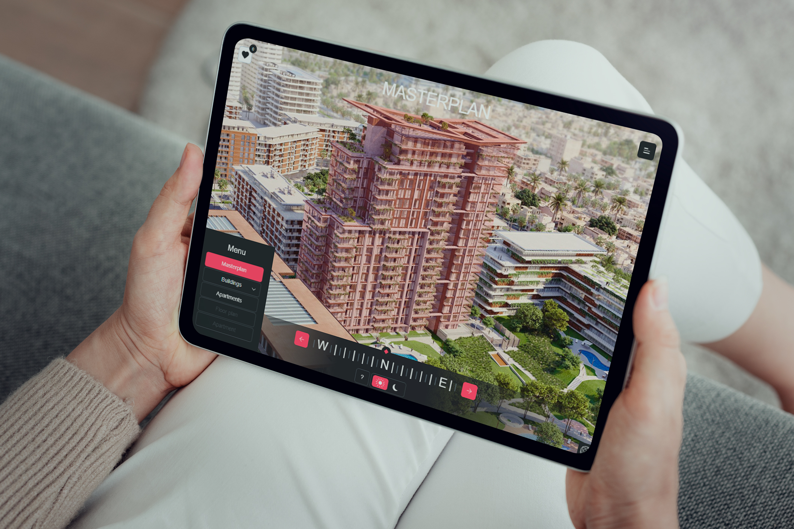
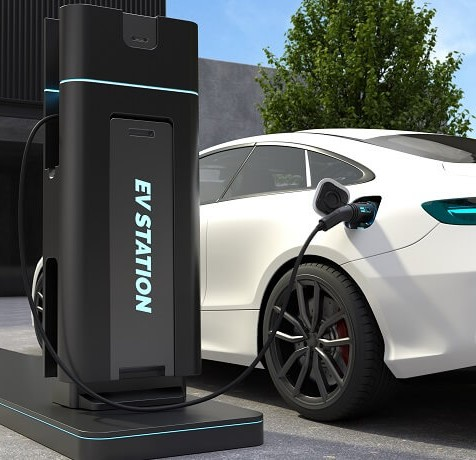

Healthcare Data Platform Powered by AI
How Techneeqs built a unified, AI-driven hospital operations platform that automated patient workflows, resource planning,
View Case Study →
We deliver tailored technology solutions
that align with your business goals and user needs.
Our customer-first approach ensures measurable outcomes, scalability, and long-term success.

How Techneeqs built a unified, AI-driven hospital operations platform that automated patient workflows, resource planning,
View Case Study →A mid-sized enterprise operating across multiple business units struggled with fragmented data sources,
View Case Study →The project involved designing and developing a centralized application platform
View Case Study →A global localization provider required a scalable, automated platform to translate enterprise websites
View Case Study →A security technology provider required a unified platform to monitor, control, and manage
View Case Study →A multi-specialty cardiac care network required an intelligent clinical software platform
View Case Study →A metropolitan transit authority sought to modernize commuter navigation by providing real-time
View Case Study →
The client required an interactive digital platform that allows users to explore buildings remotely
View Case Study →
A digital platform was developed to streamline electric vehicle charging operations for a growing cleanmobility ecosystem.
View Case Study →The client required a secure, enterprise-grade Financial Risk Management platform capable of analyzing
View Case Study →A mid-sized U.S.-based logistics provider managing a multi-state fleet faced operational inefficiencies
View Case Study →A travel technology company aimed to launch a unified digital platform that enables users to search
View Case Study →A multinational enterprise required a centralized Global Payroll Management Software capable of handling
View Case Study →A Florida based EdTech startup sought to build a scalable online education platform to deliver live classes
View Case Study →A leading international parking management provider sought a robust, self-service payment kiosk system
View Case Study →